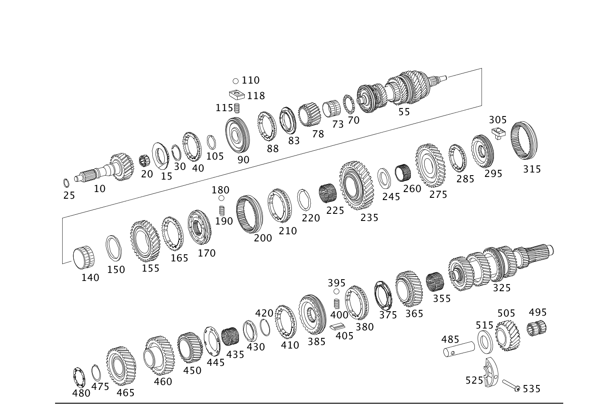

| № | Артикул | Название | Кол. | Примечание | Ограничение |
|---|---|---|---|---|---|
| 10 | A 211 262 06 02 | - Приводной вал (ANTRIEBSWELLE) | 1 | Z 515.403/19 [402] БОЛЬШЕ НЕ ПОСТАВЛЯЕТСЯ | |
| 15 | A 211 262 12 35 | - Синхронизатор (SYNCHRONKOERPER) | 1 | ПЯТАЯ И ШЕСТАЯ ПЕРЕДАЧА Z 515.403/19 [417] БОЛЬШЕ НЕ ПОСТАВЛЯЕТСЯ, ЗАКАЗЫВАТЬ КОМПЛЕКТ ПОСТАВКИ | |
| 20 | A 021 981 95 10 | - Игольчатый подшипник (NADELLAGER) | 1 | ПРИВОДНОЙ ВАЛ Z 515.403/19 | |
| 25 | A 203 994 14 35 | - Пруж. стопорное кольцо (SPRENGRING) | 1 | ПЕРВИЧНЫЙ ВАЛ; ПО НЕОБХОДИМОСТИ 1.80 MM; 1,80MM Z 515.403/19 | |
| 25 | A 203 994 15 35 | - Пруж. стопорное кольцо (SPRENGRING) | 1 | ПЕРВИЧНЫЙ ВАЛ; ПО НЕОБХОДИМОСТИ 1.85 MM; 1,85MM Z 515.403/19 | |
| 25 | A 203 994 16 35 | - Пруж. стопорное кольцо (SPRENGRING) | 1 | ПЕРВИЧНЫЙ ВАЛ; ПО НЕОБХОДИМОСТИ 1.90 MM; 1,90MM Z 515.403/19 | |
| 25 | A 203 994 17 35 | - Пруж. стопорное кольцо (SPRENGRING) | 1 | ПЕРВИЧНЫЙ ВАЛ; ПО НЕОБХОДИМОСТИ 1.95 MM; 1,95MM Z 515.403/19 | |
| 25 | A 203 994 18 35 | - Пруж. стопорное кольцо (SPRENGRING) | 1 | ПЕРВИЧНЫЙ ВАЛ; ПО НЕОБХОДИМОСТИ 2.00 MM; 2,00MM Z 515.403/19 | |
| 25 | A 203 994 19 35 | - Пруж. стопорное кольцо (SPRENGRING) | 1 | ПЕРВИЧНЫЙ ВАЛ; ПО НЕОБХОДИМОСТИ 2.05 MM; 2,05MM Z 515.403/19 | |
| 25 | A 203 994 21 35 | - Пруж. стопорное кольцо (SPRENGRING) | 1 | ПЕРВИЧНЫЙ ВАЛ; ПО НЕОБХОДИМОСТИ 2.10 MM; 2,10MM Z 515.403/19 | |
| 25 | A 203 994 22 35 | - Пруж. стопорное кольцо (SPRENGRING) | 1 | ПЕРВИЧНЫЙ ВАЛ; ПО НЕОБХОДИМОСТИ 2.15 MM; 2,15MM Z 515.403/19 | |
| 40 | A 204 262 01 34 | - Кольцо синхронизатора | 1 | ПЯТАЯ И ШЕСТАЯ ПЕРЕДАЧА Z 515.403/19 | |
| 40 | A 204 262 02 34 | - Кольцо синхронизатора (SYNCHRONRING) | 1 | ПЯТАЯ И ШЕСТАЯ ПЕРЕДАЧА Z 515.403/19 | |
| 55 | A 211 260 37 22 | - Вторичный вал (HAUPTWELLE) | 1 | Z 515.404/17 | |
| 55 | A 212 260 87 00 | - Вторичный вал (HAUPTWELLE) | 1 | Z 515.404/17 | |
| 73 | A 019 981 71 10 | - Игольчатый подшипник (NADELLAGER) | 1 | ШЕСТЕРНЯ ШЕСТОЙ ПЕРЕДАЧИ Z 515.404/17 | |
| 73 | A 020 981 06 10 | - Игольный венец | 1 | ШЕСТЕРНЯ ШЕСТОЙ ПЕРЕДАЧИ Z 515.404/17 | |
| 78 | A 211 262 05 16 | - Косозубое колесо (SCHRAEGRAD) | 1 | ШЕСТАЯ ПЕРЕДАЧА Z 515.404/17 | |
| 83 | A 211 262 12 35 | - Синхронизатор (SYNCHRONKOERPER) | 2 | ШЕСТАЯ ПЕРЕДАЧА Z 515.404/17 [417] БОЛЬШЕ НЕ ПОСТАВЛЯЕТСЯ, ЗАКАЗЫВАТЬ КОМПЛЕКТ ПОСТАВКИ | |
| 88 | A 204 262 01 34 | - Кольцо синхронизатора | 2 | ПЯТАЯ И ШЕСТАЯ ПЕРЕДАЧА Z 515.404/17 | |
| 88 | A 204 262 02 34 | - Кольцо синхронизатора (SYNCHRONRING) | 2 | ПЯТАЯ И ШЕСТАЯ ПЕРЕДАЧА Z 515.404/17 | |
| 90 | A 204 260 01 45 | - Корпус синхронизатора (GLE.LAUFKOERPER) | 1 | ПЯТАЯ И ШЕСТАЯ ПЕРЕДАЧА Z 515.404/17 | |
| 105 | A 203 994 12 35 | - Пруж. стопорное кольцо (SPRENGRING) | 1 | СИНХРОНИЗАТОР; ПО НЕОБХОДИМОСТИ 1.70 MM; 1,70MM Z 515.404/17 | |
| 105 | A 203 994 13 35 | - Пруж. стопорное кольцо (SPRENGRING) | 1 | СИНХРОНИЗАТОР; ПО НЕОБХОДИМОСТИ 1.75 MM; 1,75MM Z 515.404/17 | |
| 105 | A 203 994 14 35 | - Пруж. стопорное кольцо (SPRENGRING) | 1 | СИНХРОНИЗАТОР; ПО НЕОБХОДИМОСТИ 1.80 MM; 1,80MM Z 515.404/17 | |
| 105 | A 203 994 15 35 | - Пруж. стопорное кольцо (SPRENGRING) | 1 | СИНХРОНИЗАТОР; ПО НЕОБХОДИМОСТИ 1.85 MM; 1,85MM Z 515.404/17 | |
| 105 | A 203 994 16 35 | - Пруж. стопорное кольцо (SPRENGRING) | 1 | СИНХРОНИЗАТОР; ПО НЕОБХОДИМОСТИ 1.90 MM; 1,90MM Z 515.404/17 | |
| 105 | A 203 994 17 35 | - Пруж. стопорное кольцо (SPRENGRING) | 1 | СИНХРОНИЗАТОР; ПО НЕОБХОДИМОСТИ 1.95 MM; 1,95MM Z 515.404/17 | |
| 105 | A 203 994 18 35 | - Пруж. стопорное кольцо (SPRENGRING) | 1 | СИНХРОНИЗАТОР; ПО НЕОБХОДИМОСТИ 2.00 MM; 2,00MM Z 515.404/17 | |
| 105 | A 203 994 19 35 | - Пруж. стопорное кольцо (SPRENGRING) | 1 | СИНХРОНИЗАТОР; ПО НЕОБХОДИМОСТИ 2.05 MM; 2,05MM Z 515.404/17 | |
| 105 | A 203 994 21 35 | - Пруж. стопорное кольцо (SPRENGRING) | 1 | СИНХРОНИЗАТОР; ПО НЕОБХОДИМОСТИ 2.10 MM; 2,10MM Z 515.404/17 | |
| 105 | A 203 994 22 35 | - Пруж. стопорное кольцо (SPRENGRING) | 1 | СИНХРОНИЗАТОР; ПО НЕОБХОДИМОСТИ 2.15 MM; 2,15MM Z 515.404/17 | |
| 110 | N 005401 305000 | - Шар (KUGEL) | 3 | ПЯТАЯ И ШЕСТАЯ ПЕРЕДАЧА Z 515.404/17 | |
| 115 | A 203 262 02 93 | - пружина (FEDER) | 3 | ПЯТАЯ И ШЕСТАЯ ПЕРЕДАЧА Z 515.404/17 | |
| 118 | A 203 262 03 18 | - Нажимной упор (DRUCKSTUECK) | 3 | ПЯТАЯ И ШЕСТАЯ ПЕРЕДАЧА Z 515.404/17 | |
| 140 | A 019 981 66 10 | - Игольчатый подшипник (NADELLAGER) | 1 | ШЕСТЕРНЯ ВТОРОЙ ПЕРЕДАЧИ Z 515.404/17 | |
| 140 | A 020 981 03 10 | - Игольный венец | 1 | ШЕСТЕРНЯ ВТОРОЙ ПЕРЕДАЧИ Z 515.404/17 | |
| 155 | A 211 260 21 08 | - Св. вращ. шестерня (LOSRAD) | 1 | ВТОРАЯ ПЕРЕДАЧА Z 515.404/17 | |
| 170 | A 211 260 20 45 | - Синхронизатор (SYNCHRONKOERPER) | 1 | ВТОРАЯ ПЕРЕДАЧА Z 515.404/17 | |
| 180 | N 005401 305000 | - Шар (KUGEL) | 3 | ПЕРВАЯ И ВТОРАЯ ПЕРЕДАЧА Z 515.404/17 | |
| 190 | A 203 262 02 93 | - пружина (FEDER) | 3 | ПЕРВАЯ И ВТОРАЯ ПЕРЕДАЧА Z 515.404/17 | |
| 210 | A 211 260 32 45 | - Синхронизатор (SYNCHRONKOERPER) | 1 | ПЕРВАЯ И ВТОРАЯ ПЕРЕДАЧА Z 515.404/17 | |
| 220 | A 211 262 16 94 | - Пруж. стопорное кольцо (SPRENGRING) | 1 | СИНХРОНИЗАТОР; ПО НЕОБХОДИМОСТИ 2.40 MM Z 515.404/17 | |
| 220 | A 211 262 17 94 | - Пруж. стопорное кольцо | 1 | СИНХРОНИЗАТОР; ПО НЕОБХОДИМОСТИ 2.45 MM Z 515.404/17 | |
| 220 | A 211 262 18 94 | - Пруж. стопорное кольцо (SPRENGRING) | 1 | СИНХРОНИЗАТОР; ПО НЕОБХОДИМОСТИ 2.50 MM Z 515.404/17 | |
| 220 | A 211 262 56 94 | - Пруж. стопорное кольцо (SPRENGRING) | 1 | СИНХРОНИЗАТОР; ПО НЕОБХОДИМОСТИ 2.60 MM Z 515.404/17 | |
| 220 | A 211 262 58 94 | - Пруж. стопорное кольцо (SPRENGRING) | 1 | СИНХРОНИЗАТОР; ПО НЕОБХОДИМОСТИ 2.70 MM Z 515.404/17 | |
| 220 | A 211 262 60 94 | - Пруж. стопорное кольцо (SPRENGRING) | 1 | СИНХРОНИЗАТОР; ПО НЕОБХОДИМОСТИ 2.80 MM Z 515.404/17 | |
| 225 | A 019 981 65 10 | - Игольчатый подшипник (NADELLAGER) | 1 | ШЕСТЕРНЯ ПЕРВОЙ ПЕРЕДАЧИ Z 515.404/17 | |
| 225 | A 020 981 02 10 | - Игольный венец | 1 | ШЕСТЕРНЯ ПЕРВОЙ ПЕРЕДАЧИ Z 515.404/17 | |
| 235 | A 211 260 24 08 | - Косозубое колесо (SCHRAEGRAD) | 1 | ПЕРВАЯ ПЕРЕДАЧА Z 515.404/17 | |
| 245 | A 211 262 00 62 | - Упорная шайба (ANLAUFSCHEIBE) | 1 | ШЕСТЕРНЯ ПЕРЕДАЧИ ЗАДНЕГО ХОДА Z 515.404/17 [417] БОЛЬШЕ НЕ ПОСТАВЛЯЕТСЯ, ЗАКАЗЫВАТЬ КОМПЛЕКТ ПОСТАВКИ | |
| 260 | A 000 980 34 10 | - Игольчатый подшипник (NADELLAGER) | 1 | ШЕСТЕРНЯ ПЕРЕДАЧИ ЗАДНЕГО ХОДА Z 515.404/17 | |
| 260 | A 000 980 35 10 | - Игольчатый подшипник | 1 | ШЕСТЕРНЯ ПЕРЕДАЧИ ЗАДНЕГО ХОДА Z 515.404/17 | |
| 275 | A 211 260 26 08 | - Косозубое колесо (SCHRAEGRAD) | 1 | ПЕРЕДАЧА ЗАДНЕГО ХОДА Z 515.404/17 | |
| 285 | A 211 262 07 34 | - Кольцо синхронизатора (SYNCHRONRING) | 1 | ПЕРЕДАЧА ЗАДНЕГО ХОДА Z 515.404/17 | |
| 295 | A 211 262 08 35 | - Синхронизатор (SYNCHRONKOERPER) | 1 | ПЕРЕДАЧА ЗАДНЕГО ХОДА Z 515.404/17 [417] БОЛЬШЕ НЕ ПОСТАВЛЯЕТСЯ, ЗАКАЗЫВАТЬ КОМПЛЕКТ ПОСТАВКИ | |
| 305 | A 203 262 10 18 | - Нажимной упор (DRUCKSTUECK) | 3 | ПЕРЕДАЧА ЗАДНЕГО ХОДА Z 515.404/17 | |
| 325 | A 211 260 15 24 | - Промвал коробки передач | 1 | Z 515.405/19 | |
| 355 | A 019 981 69 10 | - Игольчатый подшипник (NADELLAGER) | 1 | ШЕСТЕРНЯ ЧЕТВЁРТОЙ ПЕРЕДАЧИ Z 515.405/19 | |
| 355 | A 020 981 05 10 | - Игольный венец | 1 | ШЕСТЕРНЯ ЧЕТВЁРТОЙ ПЕРЕДАЧИ Z 515.405/19 | |
| 365 | A 211 263 01 14 | - Косозубое колесо (SCHRAEGRAD) | 1 | ЧЕТВЁРТАЯ ПЕРЕДАЧА Z 515.405/19 | |
| 375 | A 211 263 13 20 | - Корпус подшипника (LAGERKOERPER) | 1 | ТРЕТЬЯ И ЧЕТВЁРТАЯ ПЕРЕДАЧА Z 515.405/19 [417] БОЛЬШЕ НЕ ПОСТАВЛЯЕТСЯ, ЗАКАЗЫВАТЬ КОМПЛЕКТ ПОСТАВКИ | |
| 385 | A 211 260 35 45 | - Синхронизатор (SYNCHRONKOERPER) | 1 | ТРЕТЬЯ И ЧЕТВЁРТАЯ ПЕРЕДАЧА Z 515.405/19 | |
| 395 | N 005401 305000 | - Шар (KUGEL) | 3 | ТРЕТЬЯ И ЧЕТВЁРТАЯ ПЕРЕДАЧА Z 515.405/19 | |
| 400 | A 203 262 02 93 | - пружина (FEDER) | 3 | ТРЕТЬЯ И ЧЕТВЁРТАЯ ПЕРЕДАЧА Z 515.405/19 | |
| 405 | A 211 263 02 61 | - Упор (ANSCHLAG) | 3 | ТРЕТЬЯ И ЧЕТВЁРТАЯ ПЕРЕДАЧА Z 515.405/19 [417] БОЛЬШЕ НЕ ПОСТАВЛЯЕТСЯ, ЗАКАЗЫВАТЬ КОМПЛЕКТ ПОСТАВКИ | |
| 410 | A 211 260 31 45 | - Синхронизатор (SYNCHRONKOERPER) | 2 | ТРЕТЬЯ И ЧЕТВЁРТАЯ ПЕРЕДАЧА Z 515.405/19 | |
| 420 | A 211 262 19 94 | - Пруж. стопорное кольцо (SPRENGRING) | 1 | СИНХРОНИЗАТОР; ПО НЕОБХОДИМОСТИ 2.00 MM Z 515.405/19 | |
| 420 | A 211 262 20 94 | - Пруж. стопорное кольцо | 1 | СИНХРОНИЗАТОР; ПО НЕОБХОДИМОСТИ 2.05 MM Z 515.405/19 | |
| 420 | A 211 262 21 94 | - Пруж. стопорное кольцо (SPRENGRING) | 1 | СИНХРОНИЗАТОР; ПО НЕОБХОДИМОСТИ 2.10 MM Z 515.405/19 | |
| 420 | A 211 262 22 94 | - Пруж. стопорное кольцо | 1 | СИНХРОНИЗАТОР; ПО НЕОБХОДИМОСТИ 2.15 MM Z 515.405/19 | |
| 420 | A 211 262 23 94 | - Пруж. стопорное кольцо (SPRENGRING) | 1 | СИНХРОНИЗАТОР; ПО НЕОБХОДИМОСТИ 2.20 MM Z 515.405/19 | |
| 420 | A 211 262 24 94 | - Пруж. стопорное кольцо | 1 | СИНХРОНИЗАТОР; ПО НЕОБХОДИМОСТИ 2.25 MM Z 515.405/19 | |
| 420 | A 211 262 25 94 | - Пруж. стопорное кольцо (SPRENGRING) | 1 | СИНХРОНИЗАТОР; ПО НЕОБХОДИМОСТИ 2.30 MM Z 515.405/19 | |
| 420 | A 211 262 26 94 | - Пруж. стопорное кольцо | 1 | СИНХРОНИЗАТОР; ПО НЕОБХОДИМОСТИ 2.35 MM Z 515.405/19 | |
| 435 | A 019 981 67 10 | - Игольчатый подшипник (NADELLAGER) | 1 | ШЕСТЕРНЯ ТРЕТЬЕЙ ПЕРЕДАЧИ Z 515.405/19 | |
| 435 | A 020 981 04 10 | - Игольный венец | 1 | ШЕСТЕРНЯ ТРЕТЬЕЙ ПЕРЕДАЧИ Z 515.405/19 | |
| 445 | A 211 263 13 20 | - Корпус подшипника (LAGERKOERPER) | 1 | ШЕСТЕРНЯ ТРЕТЬЕЙ ПЕРЕДАЧИ Z 515.405/19 [417] БОЛЬШЕ НЕ ПОСТАВЛЯЕТСЯ, ЗАКАЗЫВАТЬ КОМПЛЕКТ ПОСТАВКИ | |
| 450 | A 211 263 00 13 | - Косозубое колесо (SCHRAEGRAD) | 1 | ТРЕТЬЯ ПЕРЕДАЧА Z 515.405/19 [402] БОЛЬШЕ НЕ ПОСТАВЛЯЕТСЯ | |
| 460 | A 211 263 05 16 | - Косозубое колесо (SCHRAEGRAD) | 1 | ШЕСТАЯ ПЕРЕДАЧА Z 515.405/19 | |
| 465 | A 211 263 03 10 | - Шестерня (ZAHNRAD) | 1 | ПОСТОЯННО Z 515.405/19 | |
| 475 | A 211 994 09 35 | - Пруж. стопорное кольцо (SPRENGRING) | 1 | ШЕСТЕРНЯ ПОСТОЯННОГО ЗАЦЕПЛЕНИЯ Z 515.405/19 | |
| 485 | A 211 263 00 30 | - Ось шестерни заднего хода (RUECKLAUFACHSE) | 1 | ПЕРЕДАЧА ЗАДНЕГО ХОДА Z 515.402/29 | |
| 485 | A 211 263 00 30 | - Ось шестерни заднего хода (RUECKLAUFACHSE) | 1 | ПЕРЕДАЧА ЗАДНЕГО ХОДА Z 515.402/34 | |
| 485 | A 211 263 00 30 | - Ось шестерни заднего хода (RUECKLAUFACHSE) | 1 | ПЕРЕДАЧА ЗАДНЕГО ХОДА Z 515.402/35 | |
| 495 | A 020 981 10 10 | - Игольчатый подшипник (NADELLAGER) | 1 | ШЕСТЕРНЯ ПЕРЕДАЧИ ЗАДНЕГО ХОДА Z 515.402/29 | |
| 495 | A 020 981 10 10 | - Игольчатый подшипник (NADELLAGER) | 1 | ШЕСТЕРНЯ ПЕРЕДАЧИ ЗАДНЕГО ХОДА Z 515.402/34 | |
| 495 | A 020 981 10 10 | - Игольчатый подшипник (NADELLAGER) | 1 | ШЕСТЕРНЯ ПЕРЕДАЧИ ЗАДНЕГО ХОДА Z 515.402/35 | |
| 495 | A 020 981 11 10 | - Игольчатый подшипник (NADELLAGER) | 1 | ШЕСТЕРНЯ ПЕРЕДАЧИ ЗАДНЕГО ХОДА Z 515.402/29 | |
| 495 | A 020 981 11 10 | - Игольчатый подшипник (NADELLAGER) | 1 | ШЕСТЕРНЯ ПЕРЕДАЧИ ЗАДНЕГО ХОДА Z 515.402/34 | |
| 495 | A 020 981 11 10 | - Игольчатый подшипник (NADELLAGER) | 1 | ШЕСТЕРНЯ ПЕРЕДАЧИ ЗАДНЕГО ХОДА Z 515.402/35 | |
| 505 | A 211 262 01 10 | - Косозубое колесо (SCHRAEGRAD) | 1 | ПЕРЕДАЧА ЗАДНЕГО ХОДА Z 515.402/29 | |
| 505 | A 211 262 01 10 | - Косозубое колесо (SCHRAEGRAD) | 1 | ПЕРЕДАЧА ЗАДНЕГО ХОДА Z 515.402/34 | |
| 505 | A 211 262 01 10 | - Косозубое колесо (SCHRAEGRAD) | 1 | ПЕРЕДАЧА ЗАДНЕГО ХОДА Z 515.402/35 | |
| 515 | A 203 263 00 62 | - Прижимная шайба (DRUCKSCHEIBE) | 1 | ШЕСТЕРНЯ ПЕРЕДАЧИ ЗАДНЕГО ХОДА Z 515.402/29 | |
| 515 | A 203 263 00 62 | - Прижимная шайба (DRUCKSCHEIBE) | 1 | ШЕСТЕРНЯ ПЕРЕДАЧИ ЗАДНЕГО ХОДА Z 515.402/34 | |
| 515 | A 203 263 00 62 | - Прижимная шайба (DRUCKSCHEIBE) | 1 | ШЕСТЕРНЯ ПЕРЕДАЧИ ЗАДНЕГО ХОДА Z 515.402/35 | |
| 525 | A 203 263 00 47 | - Вкладыш подшипника (LAGERSCHALE) | 1 | ОСЬ ШЕСТЕРНИ ЗАДНЕГО ХОДА Z 515.402/29 | |
| 525 | A 203 263 00 47 | - Вкладыш подшипника (LAGERSCHALE) | 1 | ОСЬ ШЕСТЕРНИ ЗАДНЕГО ХОДА Z 515.402/34 | |
| 525 | A 203 263 00 47 | - Вкладыш подшипника (LAGERSCHALE) | 1 | ОСЬ ШЕСТЕРНИ ЗАДНЕГО ХОДА Z 515.402/35 | |
| 535 | N 000000 005958 | - Винт с 6-гр. глвк | 1 | ОСЬ ШЕСТЕРНИ ЗАДНЕГО ХОДА НА КОРПУСЕ КП M8X65 Z 515.402/29 | |
| 535 | N 000000 005958 | - Винт с 6-гр. глвк | 1 | ОСЬ ШЕСТЕРНИ ЗАДНЕГО ХОДА НА КОРПУСЕ КП M8X65 Z 515.402/34 | |
| 535 | N 000000 005958 | - Винт с 6-гр. глвк | 1 | ОСЬ ШЕСТЕРНИ ЗАДНЕГО ХОДА НА КОРПУСЕ КП M8X65 Z 515.402/35 |
Позиций: 104 · подписано на схемах: 104 · колесо — плавный зум в курсор, перетаскивание — пан, двойной клик — зум, клик по артикулу — скопировать.